| 合同首期费用生成 |
| 合同首期费用时指合同签订后，第一次收取的费用；在业务上，合同首期费同每月正常费用的管理方式是不太相同的。 |
| 合同审批通过后，有招商人员或者运营人员对该份合同进行首期费用的计算。 |
| 在功夫菜单中，选择【租约管理】->【首期费用生成】->【租赁首期费用计算】，进入合同选择界面，选择具体需要生成首期费用的合同后，点击分栏“首期结算”，点击按钮“首期结算”，界面如下图（图4-1）： |
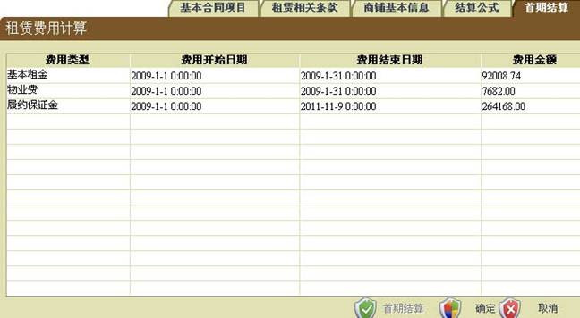 |
| 图(4-1) |
| 点击“确定”，则该份合同的首期费用计算完成，将打印合同的首期费用收费单。 |
| 点击“取消”，则取消该次计算，本份合同没有生成首期费用。 |
| 租赁费用管理 |
| 租赁费用计算 |
| 租赁费用计算就是生成合同中结算公式约定的费用期间内的费用；租赁费用计算只能完成已经生成首期费用的合同的费用类型计算，且需要逐月逐次计算。 |
| 此功能模块是用来对租赁费用的计算，从菜单栏中，点击【费用】->【租赁费用管理】->【租赁费用计算】，即可进入租赁费用计算界面，如下图（图4-2）： |
| 在“租赁费用计算”界面中，可以计算当前用户所在部门权限范围内的全部合同，也可计算单个合同；计算的费用类型也可以选择。 |
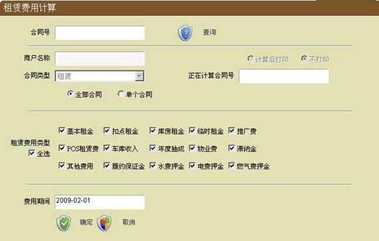 |
| 图(4-2) |
| 租赁费用计算默认为全部合同的全部费用类型计算，然后选择费用期间，选择计算后打印或不打印，再点“确定”按钮，即可完成整个合同的费用的计算。 |
| 如果需要对某一单个合同进行费用计算，那么选择单个合同，在合同号中输入要计算的合同号，点“查询”按钮，即可查询出此合同的合同信息，在选择好费用计算期间，点“确定”按钮，即可完成租赁费用的计算。 |
| 租赁费用结算 |
| 租赁费用结算是完成对租赁商户已生成费用类型的结算。 |
| 此功能模块是用来对租赁费用的计算，从菜单栏中，点击【费用】->【租赁费用管理】->【租赁费用结算】，即可进入租赁费用计算界面，如下图（图4-3）： |
| 通过租赁商户号或租赁合同编号或者结算单号查询到需要结算的结算单，在“结算单列表”中选择具体结算单，核对该结算单合同号和商户名称无误后，选择商户结算的“支付方式”、“付款总额”、“付款币种”；在“结算单明细列表”中调整费用类别的“本次付”金额，无误后“保存”；即完成对该份结算单的收款处理。 |
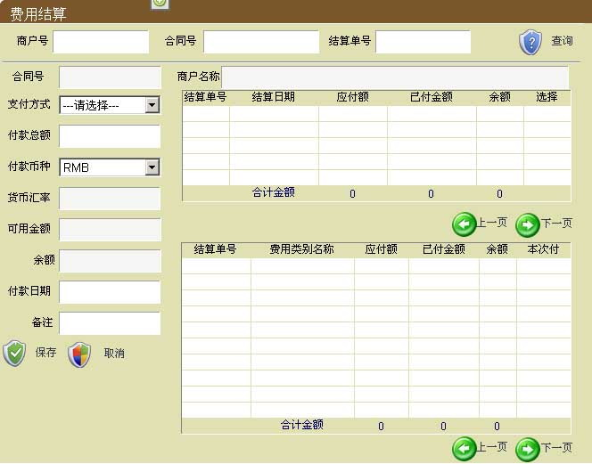 |
| 图(4-3) |
| 结算单管理 |
| 重打结算单 |
| 此功能模块是用来重打结算单，从菜单栏中，点击【费用】->【结算单管理】->【重打租赁结算单】，即可进入重打结算单界面，如下图（图4-4）： |
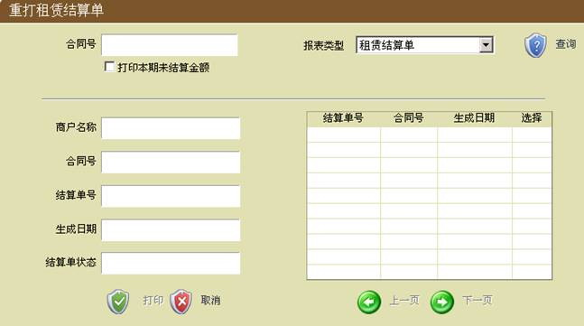 |
| 图(4-4) |
| 输入商户号与费用计帐月，点“查询”按钮，将符合此信息的所有结算单信息查询出来，显示在列表中，选择需要重新打印的结算单，点“打印”按钮，即可完成打印功能。 |
| 租赁结算单调整 |
| >> 结算单调整录入 |
| 租赁结算单调整是针对结算单费用类别金额的调整，它是需要工作流流转审批完成的。 |
| 采用用户角色是“财务会计”的用户登录后，在系统的工作流区（工作导航台）中，选择【租约管理】->【结算单调整-临时】->【结算单调整录入】，进入租赁结算单调整工作区，如下图（图4-5）： |
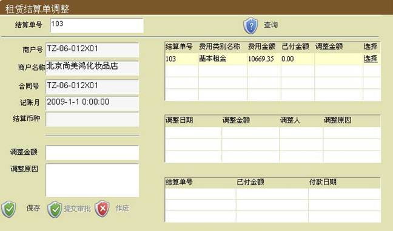 |
| 图(4-5) |
| 输入结算单号查询查看“商户号”、“商户名称”、“合同号”无误后，在“结算单明细列表”中选择需要调整的费用类别，查看“记账月”无误后，录入调整金额（增加正数、减少负数）和调整原因后，“保存”、“提交审批”。 |
| “保存”后，结算单调整并没有完成调整，需要审批通过以后才能完成调整；在审批通过之前，结算单费用类别的金额还是原金额。 |
| >> 结算单调整审批 |
| 用户角色是“副总经理（财务）”的用户登录后，在系统的工作流区（工作导航台）中，选择【租约管理】->【结算单调整-临时】中的商户名称，进入租赁结算单调整审批界面，如下图（图4-6）： |
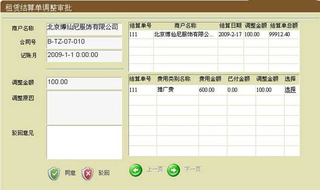 |
| 图(4-6) |
| 按钮“同意”，将完成该调整，结算单费用类别金额根据调整金额变动； |
| 按钮“驳回”，驳回本次调整，结算单费用类别金额还是原金额。 |
| 租赁结算单取消 |
| >> 结算单取消录入 |
| 结算单取消是针对整份结算单进行的，涉及该份结算单上所有费用类别；它也是需要工作流流转审批完成。 |
| 采用用户角色是“财务会计”的用户登录后，在系统的工作流区（工作导航台）中，选择【租约管理】->【结算单取消】->【结算单取消录入】，进入租赁结算单取消录入工作区，如下图（图4-7）： |
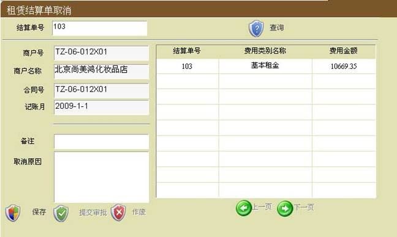 |
| 图(4-7) |
| 在结算单号中输入结算单号，点“查询”按钮，将该结算单的所有信息查询出来，在右边列表中选择需要取消的结算单，输入调整的原因！点“保存”按钮，即该结算单取消录入保存成功，需报领导审批，点“提交审批”按钮，即提交给领导审批。 |
| >> 结算单取消审批 |
| 用户角色是“副总经理（财务）”的用户登录后，在系统的工作流区（工作导航台）中，选择【租约管理】->【结算单取消】中的商户名称，进入租赁结算单取消审批界面，如下图（图4-8）： |
| 按钮“同意”，将完成该取消，该份结算单取消成功； |
| 按钮“驳回”，驳回本次取消，结算单没有变化。 |
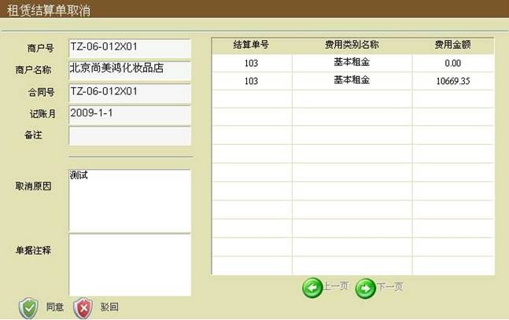 |
| 图(4-8) |
| 押金处理 |
| 押金处理是对有效合同的商户所有已交纳的押金或保证金进行处理，从菜单栏中，点击【费用】->【押金处理】，即可进入押金处理界面，如下图（图4-9）： |
| 在“商户号”或“商铺号”中，输入数据，点击“查询”按钮，系统将查询到该商户的费用分类为“押金”的费用类型； |
| 选择需要处理的押金，在“处理方式”和“处理金额”中选择相应的处理方式和金额，点击“确定”，操作完成。 |
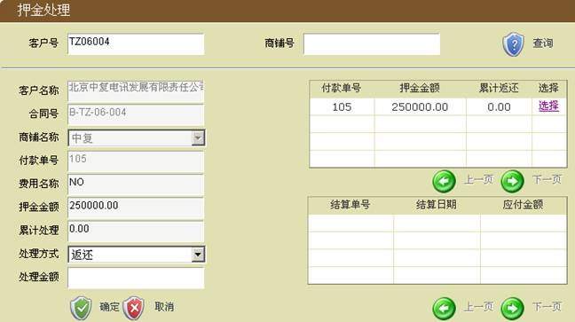 |
| 图(4-9) |
| 水电费 |
| 水电费是能源类（记表类）费用的统称；水电费收取流程是有工程部门录入、审批通过后，经过租赁费用计算后（参见“租赁费用计算”）打印结算单，形成正式费用。 |
| 水电费用（能源费）是需要记录表字的，所以之前硬件信息需要录入维护进系统中去；下面主要介绍水电费的工作流审批过程： |
| 水电费录入 |
| 使用具体财务会计角色的用户进入系统后，在系统的工作流区（工作导航台）中，选择【租约管理】->【水电费】->【水电费录入】，进入水电费录入工作区，如下图（图4-10）： |
| 单击“商铺代码”，选择具体上的商铺后；点击“查询”按钮，系统将该商铺硬件信息引入。 |
| 首先录入“费用开始日期”、“费用结束日期”，这是对费用发生日期的记录；选择“记表费用类型”、“硬件代码”后，系统将自动的读取上次该硬件读数，录入“本次读数”和“免费使用量”（默认0）、“单价”后，点击按钮“添加”；该次录入完成，一次可以录入多条硬件费用情况；全部录入完成后，点击“确定”后，“提交审批”进入水电费工作流的下一节点。 |
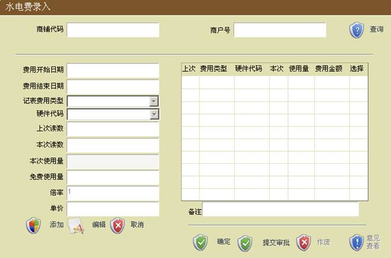 |
| 图(4-10) |
| 水电费审批 |
| 使用具体财务经理角色的用户进入系统后，在系统的工作流区（工作导航台）中，选择【租约管理】->【水电费】中选择商铺名称，进入水电费审批工作区，如下图（图4-11）： |
| 选择费用列表中的一条记录可以查看该条费用情况。 |
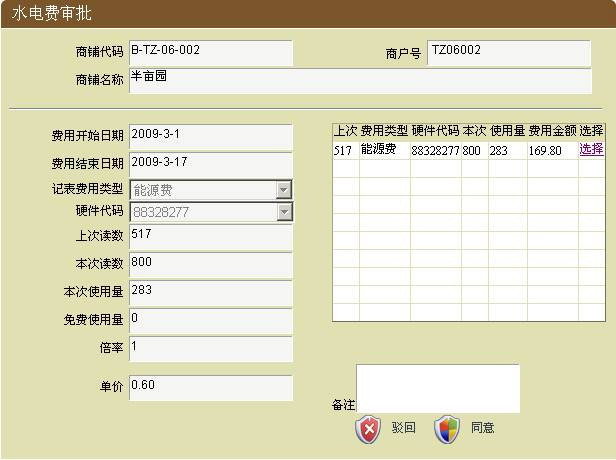 |
| 图(4-11) |
| 按钮“同意”，将完成该次审批，水电费录入完成； |
| 按钮“驳回”，驳回本次录入，水电费录入没有完成。 |
| 其他费用 |
| 其他费用主要是指商户产生的在合同结算公式之外费用，比如违约金、罚款等；其他费用收取流程是职能部门（运营、物业、财务等）录入、复核、审批同意后，经过租赁费用计算后（参见“租赁费用计算”）打印结算单，形成正式费用。 |
| 其他费用录入是需要工作流流转审批来完成的；针对不同职能部门的需要，分别设置了其他费用（运营）、其他费用（物业）、其他费用（财务）三个工作流；三条工作流操作基本相同，主要区别是操作角色和操作节点多少不同。 |
| 下面主要以其他费用（财务）工作流做介绍： |
| 其他费用录入 |
| 其他费用（财务）录入的操作角色是“财务会计”，使用具体财务会计角色的用户进入系统后，在系统的工作流区（工作导航台）中，选择【费用管理】->【其他费用（财务）】->【其他费用录入】，进入其他费用录入工作区，如下图（图4-12）： |
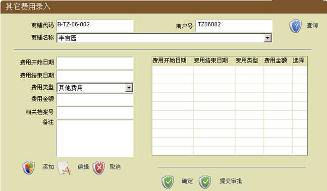 |
| 图(4-12) |
| 通过商铺代码或商户号查询到商铺后，录入费用开始结束日期以及费用类型、金额等信息后，点击按钮“添加”，一种其他费用录入完成；一次审批可以录入多条其他费用； |
| 录入完成后，“确定”后才能“提交审批”；系统将转到下一工作流节点。 |
| 其他费用审批 |
| 使用具体财务经理角色的用户进入系统后，在系统的工作流区（工作导航台）中，选择【费用管理】->【其他费用（财务）】中选择商铺名称，进入其他费用审批工作区，如下图（图4-12）： |
| 选择其他费用列表中的一条记录，核对无误后，可以通过“驳回”或“同意”完成本次其他费用录入审批流程。 |
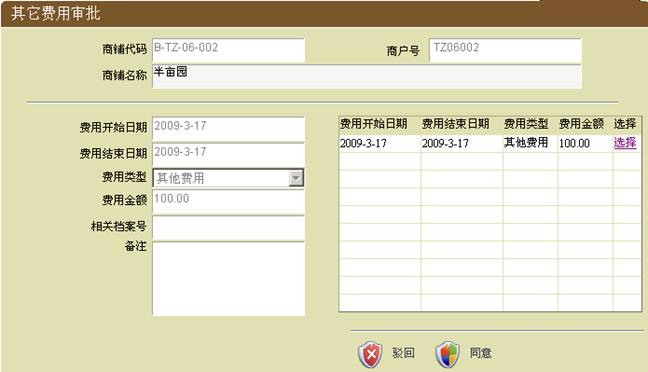 |
| 图(4-13) |